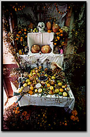

あとがき
私がメキシコで見てきたものは過剰なまでに表現しつくす文化だ。日本人は見せびらかすことを美徳としてこなかったから、この点ではメキシコは最も異質で正反対な場所かもしれない。
しかし、人間の内なる世界の探求においては、共通するスピリチャルなところも多数見られた。すべての場所に神を宿らせるような多神教的な感覚や、自然と共に生き、そこに美しさを発見すること。ただ、メキシコでは私たちが敢えて形にせずにおいたものが、目に見える形にする。それは、人間の内側にあるイメージ、人それぞれの心の総体である宇宙観のようなものを、頭の中から外部へ取り出したのだろう。トナンツィントラの天蓋に表現された世界は、見ることのできる彼らの宇宙だ。
内面のイメージを形の中にすべて入れ込むということは、尊い気持ちだけでなく、心のなかにある欲や邪念までも表現しつくす。彼らは自分の中にある聖と俗のすべてを肯定して、心に叶うものを作リ続けた。
教会堂にしろ民芸品にしろ墓の飾り付けにしろ、この世のすべてを詰め込みながら決して嫌味ではない。それは、人に見せること、他人に誇示することを主眼にしていないからだろう。古代より神や共同体のために奉仕することを大切にしてきた人々は、他人に対して自分を誇示するよりも、自分の行為を神様に見てほしい気持ちの方が強いのかもしれない。きっと、天を見上げ、宇宙に輝くような人生を求めてきたのではないか。彼らは太陽の光や月の光、星の輝き、水などに揺らめく反射光、ロウソクの灯、焼けた土や石の炎など、自然界の光を自分の生命にあてて見つめてきたのだと思う。
ウルトラバロックを撮っていた頃は、過剰装飾のすべてを写し込もうと、闇の中で自然光によって掘り起こされた彫刻群に立ち向かっていた。しかし、最近のホテル巡りの旅では、装飾そのものだけでなく、それらの装飾や空間に命を与えているメキシコの光にレンズを向けている。メキシコの魂の光とでも言おうか。
晶文社の足立恵美さんが、メキシコのことを本にまとめることを勧めてくれたのが五年前。まだ「死者の日」の撮影をしていた頃だ。あれから私の中でメキシコは拡大し、展覧会になったり、自邸になったり、ホテル巡礼になったりと長い道を歩いた。そして今日、足立さんをはじめ、角田純一さん、吉田秀道さん、尾形優さん等からの貴重なアドバイスを受け、ようやく出版にたどりつくことができた。またゴルキーさんの家族をはじめ、お世話になったメキシコの友人たちにも深く感謝します。

二〇〇一年正月
小野一郎